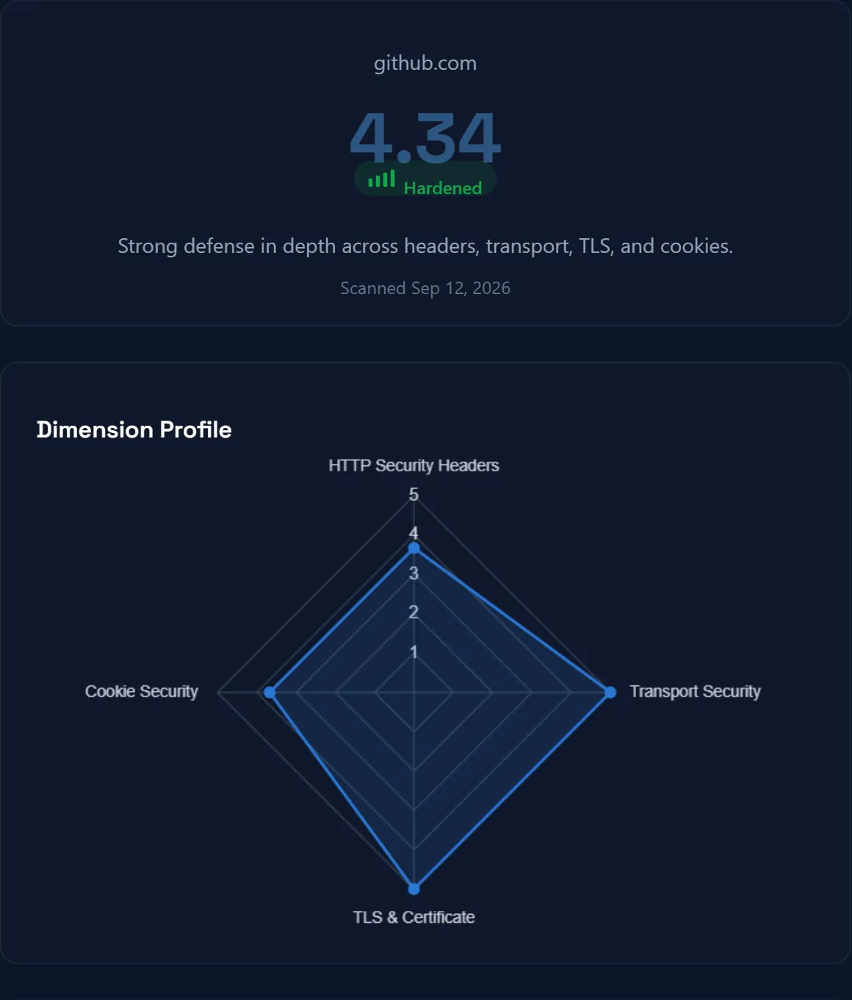
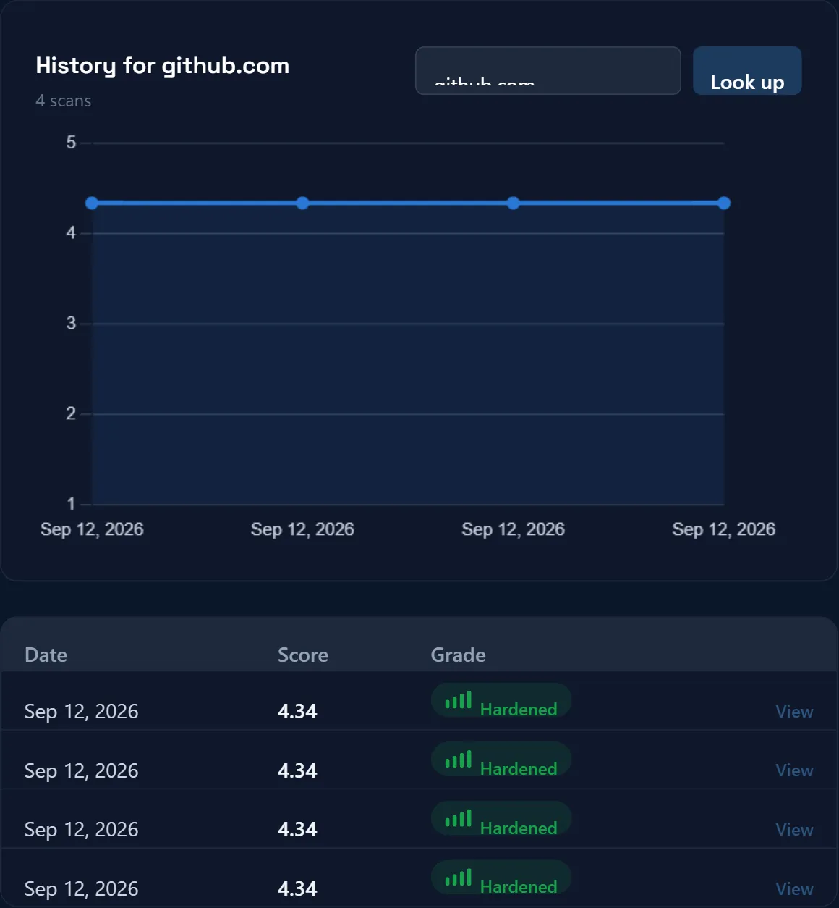

Back to projects
Security Headers & TLS Auditor
Paste any public URL and get an instant security posture report: HTTP security headers, TLS and certificate health, transport enforcement, and cookie flags, scored and graded with concrete fixes for anything missing. Re-scan the same domain later to see whether it improved. Built alongside the maturity tool as a security-flavored take on the same idea: assess it, track it over time, this time leaning on penetration-testing coursework instead of survey design.
Node.js
Express
node:sqlite
Chart.js
No auth · domain-keyed


SSRF-hardened
Connects to a validated IP, never a re-resolved hostname. A tool that scans whatever URL a user pastes is a textbook SSRF risk. It already refused cloud-metadata IPs, loopback, and private ranges, but the DNS lookup used to check a hostname and the connection that followed were still two separate steps, open to a DNS-rebinding swap in between. Closed that gap by resolving once, connecting straight to the validated IP, and passing the original hostname only through TLS SNI and the HTTP Host header.
no login
History keyed by domain, not by account. Security scanners like securityheaders.com and SSL Labs are used ad hoc: paste a URL, get a report, no account needed. This one has no auth at all; scan history is keyed by the domain itself, a deliberate contrast to the maturity tool's per-organization login.
caught in testing
The rate limiter was not actually a hard gate. Live re-testing turned up an inconsistency: rapid repeat scans of the same domain sometimes returned a generic connection error instead of the intended wait-and-retry response. The check was racing the scan instead of blocking it first. Fixed by moving the rate-limit check before any network call runs, so a repeat scan is rejected the same way every time.